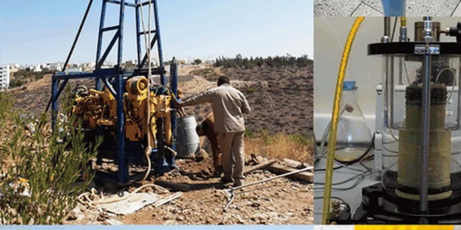

En el área metropolitana de Valencia, ofrecemos servicios integrales de ingeniería geotécnica adaptados a las condiciones del terreno local. Nuestra experiencia consolidada abarca desde la caracterización de suelos mediante calicatas exploratorias y ensayos in situ hasta el diseño de cimentaciones superficiales y profundas, siempre bajo los códigos técnicos vigentes. Combinamos equipos calibrados con un profundo conocimiento de la geología valenciana para garantizar informes normativos, estudios de estabilidad de taludes y soluciones de mejora del terreno que optimizan la seguridad y el costo de su proyecto.
